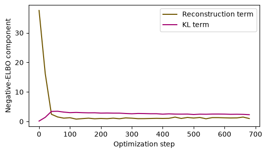
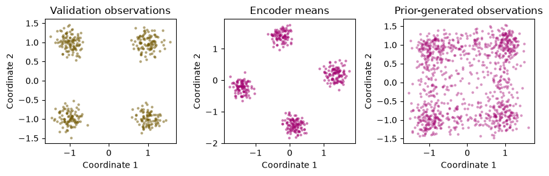

7 · Latent variables, VAEs, GANs, and flows#
Question. What alternatives to sequential factorization can represent a complex distribution?
Download the executed notebook
A latent-variable model generates an unobserved \(Z\) and then generates \(X\) conditional on it. This connects directly to mixture models and random-effects models. The difficulty is often integrating over \(Z\). We will derive a variational objective, train a small variational autoencoder (VAE) on two-dimensional observations, and contrast its objective with adversarial learning and invertible transformations.
Prerequisites: Chapters 1–2, conditional densities, Jensen’s inequality, and KL divergence. Outcomes: distinguish prior, posterior approximation, and observation model; derive the ELBO; implement reparameterization; compare what a VAE, GAN, and flow can evaluate. The VAE is a small CPU experiment; GANs and flows are comparison topics with an exact change-of-variables calculation.
7.1 · Three distributions with different jobs#
Specify a prior \(p(z)\) and an observation model \(p_\theta(x\mid z)\). The marginal density is \(p_\theta(x)=\int p_\theta(x\mid z)p(z)\,dz\). An encoder \(q_\phi(z\mid x)\) approximates the posterior. It is not the generative prior.
At training time the encoder uses observed \(x\). At unconditional generation time, draw \(z\sim p(z)\) and then \(x\sim p_\theta(x\mid z)\). Feeding observed data through the encoder and decoder produces a reconstruction, which answers a different question from generating new observations.
7.2 · Derive the evidence lower bound#
For any suitable density \(q_\phi(z\mid x)\),
The gap is \(\operatorname{KL}\{q_\phi(z\mid x)\Vert p_\theta(z\mid x)\}\ge0\). Thus improving the bound can involve both improving the marginal model and making the approximate posterior closer to the exact posterior. An expressive decoder does not automatically make the bound tight.
For a diagonal Gaussian encoder and a standard normal prior,
Here \(\ell\) is log variance, not log standard deviation. With \(p_\theta(x\mid z)=N(f_\theta(z),\sigma_x^2I)\), the reconstruction contribution to negative ELBO, up to a fixed constant, is \(\|x-f_\theta(z)\|^2/(2\sigma_x^2)\). Changing this scale changes the observation model and the balance with KL; it is not a harmless numerical adjustment.
7.3 · Reparameterize the random draw#
Write \(z=\mu_\phi(x)+\exp(\ell_\phi(x)/2)\odot\epsilon\) with \(\epsilon\sim N(0,I)\). The random variable now has a parameter-free distribution, while the transformation is differentiable in the encoder parameters. This gives a pathwise gradient estimator under the usual interchange conditions.
import numpy as np
import torch
from torch import nn
import matplotlib.pyplot as plt
torch.set_num_threads(1)
torch.manual_seed(7)
rng = np.random.default_rng(7)
centers = np.array([[-1., -1.], [-1., 1.], [1., -1.], [1., 1.]])
labels = rng.integers(0, 4, size=1600)
X = centers[labels] + rng.normal(scale=0.18, size=(1600, 2))
train = torch.tensor(X[:1200], dtype=torch.float32)
valid = torch.tensor(X[1200:], dtype=torch.float32)
class VAE(nn.Module):
def __init__(self):
super().__init__()
self.encoder = nn.Sequential(nn.Linear(2, 32), nn.Tanh(), nn.Linear(32, 4))
self.decoder = nn.Sequential(nn.Linear(2, 32), nn.Tanh(), nn.Linear(32, 2))
def encode(self, x):
mu, logvar = self.encoder(x).chunk(2, dim=-1)
return mu, logvar.clamp(-8, 5)
def forward(self, x):
mu, logvar = self.encode(x)
z = mu + torch.exp(0.5 * logvar) * torch.randn_like(mu)
return self.decoder(z), mu, logvar
model = VAE()
observation_sd = 0.18
def loss_parts(x):
mean, mu, logvar = model(x)
reconstruction = ((x - mean)**2).sum(-1) / (2 * observation_sd**2)
kl = 0.5 * (mu**2 + logvar.exp() - 1 - logvar).sum(-1)
return reconstruction.mean(), kl.mean()
zero = torch.zeros(3, 2)
assert torch.allclose(0.5*(zero**2 + zero.exp()-1-zero).sum(-1), torch.zeros(3))
Clamping log variance limits extreme values in this small experiment and is part of the chosen encoder family. The first 1,200 observations are training data and the remaining 400 are validation data from the same simulated mixture. We use a fixed training budget; validation is a diagnostic rather than a source of repeated hyperparameter searches.
7.4 · Optimize and inspect both objective components#
optimizer = torch.optim.Adam(model.parameters(), lr=0.005)
history = []
for step in range(700):
ids = torch.randint(len(train), (128,))
optimizer.zero_grad()
reconstruction, kl = loss_parts(train[ids])
(reconstruction + kl).backward()
optimizer.step()
if step % 20 == 0:
history.append((step, reconstruction.item(), kl.item()))
model.eval()
with torch.no_grad():
validation_terms = np.array([[a.item(), b.item()]
for a, b in [loss_parts(valid) for _ in range(20)]])
print('Validation reconstruction / KL:', validation_terms.mean(0).round(3))
history = np.asarray(history)
fig, ax = plt.subplots(figsize=(5.5, 3.2))
ax.plot(history[:, 0], history[:, 1], label='Reconstruction term', color='#705600')
ax.plot(history[:, 0], history[:, 2], label='KL term', color='#a2006e')
ax.set(xlabel='Optimization step', ylabel='Negative-ELBO component')
ax.legend()
plt.tight_layout()
plt.show()
Validation reconstruction / KL: [1.144 2.398]

The reported objective omits the fixed Gaussian normalization constant. It is therefore not an exact negative log likelihood. Repeated validation draws reduce Monte Carlo noise conditional on the fitted model; they do not measure uncertainty from sampling a new training dataset.
A small KL term can mean that the encoder stays close to the prior. If the decoder also ignores \(z\), this is posterior collapse. A good reconstruction score alone is insufficient: the prior samples could still occupy regions the decoder handles poorly.
7.5 · Generate from the prior, not the encoder#
with torch.no_grad():
latent_mean, _ = model.encode(valid)
decoder_mean = model.decoder(torch.randn(1000, 2))
generated = decoder_mean + observation_sd * torch.randn_like(decoder_mean)
fig, axes = plt.subplots(1, 3, figsize=(9, 3))
axes[0].scatter(valid[:, 0], valid[:, 1], s=5, alpha=0.4, color='#705600')
axes[1].scatter(latent_mean[:, 0], latent_mean[:, 1], s=5, alpha=0.4, color='#a2006e')
axes[2].scatter(generated[:, 0], generated[:, 1], s=5, alpha=0.3, color='#a2006e')
for ax, title in zip(axes, ['Validation observations', 'Encoder means', 'Prior-generated observations']):
ax.set(title=title, xlabel='Coordinate 1', ylabel='Coordinate 2')
plt.tight_layout()
plt.show()
print('Observed mean:', valid.mean(0).numpy().round(3))
print('Generated mean:', generated.mean(0).numpy().round(3))

Observed mean: [-0.025 0.067]
Generated mean: [-0.003 0.069]
Inspect whether all four clusters appear, whether their spread is appropriate, and whether too much probability lies between clusters. Matching the mean is weak evidence: a single central Gaussian can have the same mean as a separated mixture. A stronger assessment compares several predefined features on held-out observations and generated samples, while recognizing that a finite set of summaries cannot establish equality of distributions.
7.6 · GANs: learn through a discrimination problem#
A generative adversarial network maps a simple random input through \(G_\theta\) and trains a discriminator \(D_\psi\) to separate observed from generated samples. The original minimax objective is
For fixed distributions and an unrestricted optimal discriminator, \(D^*(x)=p_0(x)/(p_0(x)+p_G(x))\) where the density expression is defined. This motivates a density-ratio interpretation, but practical networks and alternating optimization do not achieve that ideal automatically. Mode collapse means the generator can neglect portions of the target distribution. Unlike our VAE observation model, a general GAN does not supply a tractable density for an arbitrary observation.
7.7 · Flows: retain an invertible map and its Jacobian#
For an invertible differentiable map \(x=f_\theta(z)\) of equal-dimensional spaces,
Consider the one-dimensional affine flow \(X=aZ+b\), \(a>0\). Its density is exactly a normal density with mean \(b\) and standard deviation \(a\).
a, b = 1.7, -0.4
x = np.linspace(-4, 4, 100)
z = (x - b) / a
flow_log_density = -0.5*z*z - 0.5*np.log(2*np.pi) - np.log(a)
direct_log_density = -0.5*((x-b)/a)**2 - np.log(a*np.sqrt(2*np.pi))
assert np.allclose(flow_log_density, direct_log_density)
print('Change-of-variables identity verified.')
Change-of-variables identity verified.
Expressive flows use transformations whose inverse and determinant remain computationally manageable. Invertibility constrains the architecture; it buys exact density evaluation for the specified model, not a guarantee that the model fits the data.
7.8 · Exercises and worked solutions#
ELBO equality: when is the bound exact? Solution: when \(q_\phi(z\mid x)\) equals the model posterior almost everywhere. This does not imply that the fitted marginal equals the true data distribution.
Log variance: if
logvar = log(4), what multiplier belongs on the standard normal noise? Solution: \(\exp(\log(4)/2)=2\). Multiplying by four would produce variance 16.Generation: why must observation noise be added to the decoder mean in our VAE? Solution: the decoder parameterizes the mean of a Gaussian observation distribution. Omitting noise samples a different distribution, namely the distribution of conditional means.
Model comparison: which method directly provides exact likelihood, a variational bound, or only a sampling mechanism? Solution: a tractable flow provides exact model likelihood; a VAE provides a computable ELBO and generative model; a standard implicit GAN primarily provides samples. These labels describe objectives and access, not universal quality rankings.
Failure probe: fit a single Gaussian to the four-cluster data and compare its mean with the VAE. Solution: means may be close for both, while cluster occupancy and density between clusters differ. This demonstrates why evaluation needs more than first moments.
7.9 · Reading and next step#
Auto-Encoding Variational Bayes develops amortized variational inference and reparameterized optimization. Compare its statistical objects with Generative Adversarial Nets and the change-of-variables identity above. Chapter 8 turns a sequence of noising and denoising operations into another generative model.